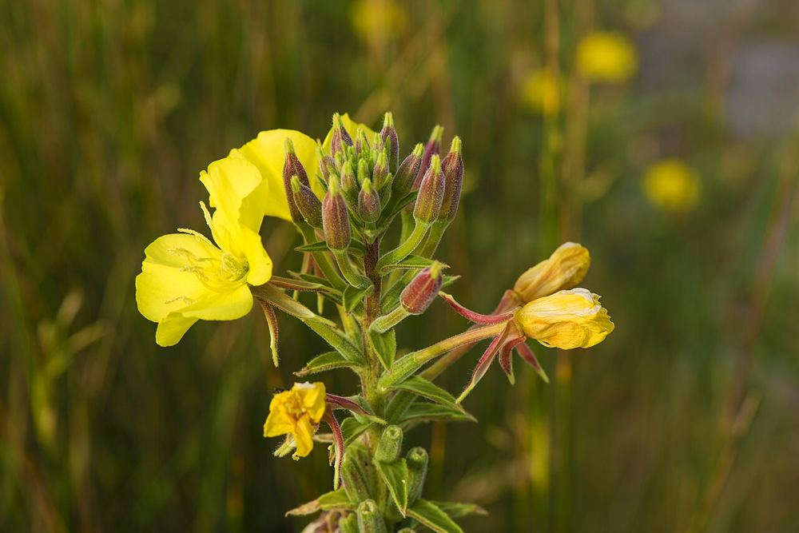

All 10 herbs / 8 of 10
How to grow evening primrose from seed
Its yellow flowers open at dusk fast enough to watch — and wilt by the next afternoon.
MediumBiennialOenothera biennis · sundrop · Evening primrose family (Onagraceae)

At a glance
- Life cycle
- Biennial, zones 4–9 — leaves the first year, flowers the second
- Difficulty
- Medium
- Sun
- Full sun
- Soil
- Poor, dry, well-drained
- Sowing depth
- Surface-sow or cover very lightly — light helps germination
- Germination
- About 2–3 weeks at 65–70°F (18–21°C)
- When to sow
- Direct sow in spring or autumn
- Spacing
- 12–18 in (30–45 cm)
- Height
- 3–5 ft (90–150 cm) in the second year
- Flowers
- Second summer
Step by step
- Scatter seed on bare, sunny, poor soil and press it in. Do not bury it.
- Keep the surface damp until seedlings appear, then thin to 12–18 inches apart.
- Year one: a flat rosette of leaves close to the ground. Leave it alone through winter.
- Year two: a tall stem with yellow flowers that open in the evening for night moths. Sit outside at sunset in July — you can see them unfold in a minute or two.
Harvest and drying
Seeds are collected in late summer and autumn when the capsules turn brown. The first-year roots were historically eaten as a vegetable.
Saving seed
It self-seeds heavily. Cut the spent stems before the capsules open if you do not want it everywhere.
A bit of history
Native American peoples used evening primrose roots and leaves as food and in traditional practice. Today its seed is the source of the evening primrose oil sold in stores.
Where to get the seeds
A single organic packet from Strictly Medicinal Seeds ($3.84, 100 seeds), or all ten herbs in one box with the Medicinal Garden Kit (affiliate link). Compare both.
Traditional uses on this site are history, not medical advice. Before using any herb, talk to a doctor or pharmacist — especially if you are pregnant, nursing, taking medication, or allergic to plants in the daisy family (Asteraceae), which includes seven of the ten herbs here.